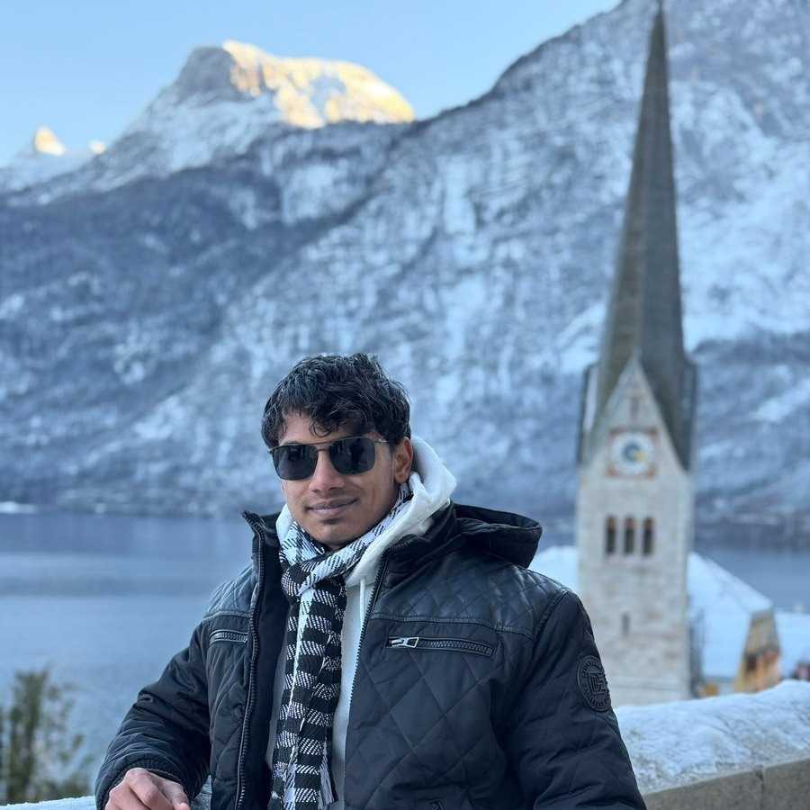
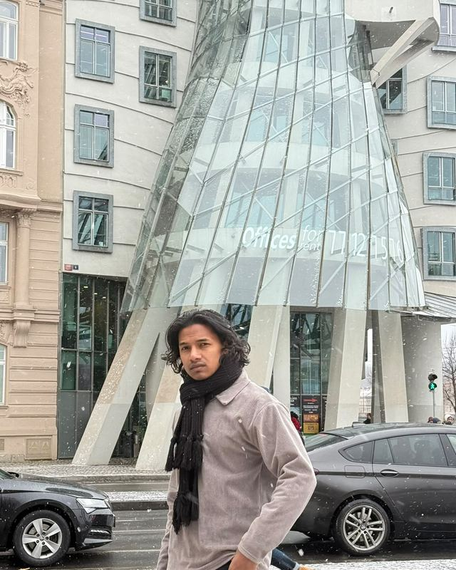
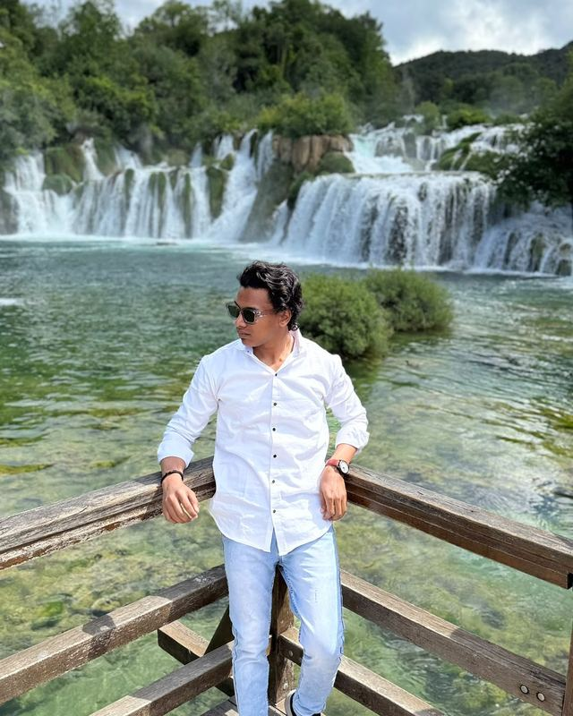

Open to Robotics Internships & Master's Thesis · Based in Ravensburg, Germany
Prathamesh Dhongade
M.Sc. Mechatronics — Autonomous Mobile Robotics
I build autonomous systems that perceive, map, and navigate the real world — from SLAM pipelines and sensor fusion to full ROS2 navigation stacks running on real hardware.
on custom AMR platform
reduction, same mapping fidelity
10,000 m² indoor environment
or in active development

01 — AboutRobots that work
outside the lab.
I'm an M.Sc. Mechatronics student at RWU Ravensburg-Weingarten, specializing in Autonomous Mobile Robotics. My work sits at the intersection of perception, navigation, and control — I've spent the last few years building ROS2-based navigation systems, optimizing SLAM pipelines, and fusing LiDAR, camera, and IMU data into robots that can actually handle unstructured, real-world environments.
Before my Master's, I worked as a Robotics Systems Engineer and later an Automation Engineer in India, where I deployed navigation systems for industrial inspection robots and designed mobile platforms for autonomous material handling on live production floors — not just simulation. That hands-on, "make it work on the factory floor" experience shapes how I approach every project now.
Originally from Nashik, Maharashtra, India, I'm now based in Ravensburg, Germany.
I'm currently looking for a Robotics Internship or Master's Thesis in autonomous systems, robot perception, navigation, or intelligent robotic systems.


Full navigation-stack coverage.
Perception to control, simulation to hardware.
Robotics & Middleware
Navigation & SLAM
Perception & Computer Vision
Programming
Hardware & Automation
Safety & Engineering
On real hardware,
not just in simulation.
Robotics Systems Engineer
Jun 2023 – Dec 2023Perfect Measuring Solutions · Pune, India
- Built and deployed a ROS-based navigation system for industrial inspection robots operating in unstructured factory environments.
- Optimised SLAM algorithms, reducing computational overhead by 45% while maintaining mapping fidelity.
- Developed a LiDAR + vision sensor-fusion pipeline and authored system architecture documentation used for subsequent field deployments.
- Produced control-cabinet wiring diagrams and supported hardware commissioning of robotic control components.
Automation Engineer
Nov 2020 – Nov 2021ZINC-AL CAST PVT LTD. · Pune, India
- Designed and integrated a mobile robot platform for autonomous material handling in dynamic production-line environments.
- Developed custom path-planning algorithms and connected perception systems to the ROS navigation stack.
- Participated in commissioning, live testing, and fault diagnosis of automation systems on the factory floor.
Selected robotics projects.
Filter by area to jump to what's relevant.
Foundations in mechanical
& mechatronic systems.
M.Sc. Mechatronics Engineering
2024 – PresentHochschule Ravensburg-Weingarten University (RWU) · Ravensburg, Germany
Specialisation: Autonomous Mobile Robotics
B.E. Mechanical Engineering
2020 – 2023Dr. DY Patil Institute of Technology, Pimpri · Pune, India
Thesis: Autonomous Navigation Systems
Diploma in Mechanical Engineering
2017 – 2020Guru Gobind Singh Polytechnic, Nashik · Nashik, India
Focus: Robotics & Automation
Publications & Research
- Voice Controlled Robot Using Node-MCU — IRJMETS, Vol. 05, Issue 12, Dec. 2023
- AI Based Car Parking Allotment System — IRJMETS, Vol. 05, Issue 12, Dec. 2023
- Optimised Navigation Stack for AMRs — RWU Technical Report, 2025
- Contributor — Navigation2, ROS2 Open-Source Project, 2024
Achievements
- Best Robotics Implementation — RWU Hackathon 2024
- Published 3 ROS2 packages, contributed to the ROS2 ecosystem
Research Interests
Let's build something
that navigates the real world.
Open to robotics internships, Master's thesis collaborations, and interesting conversations about autonomous systems.